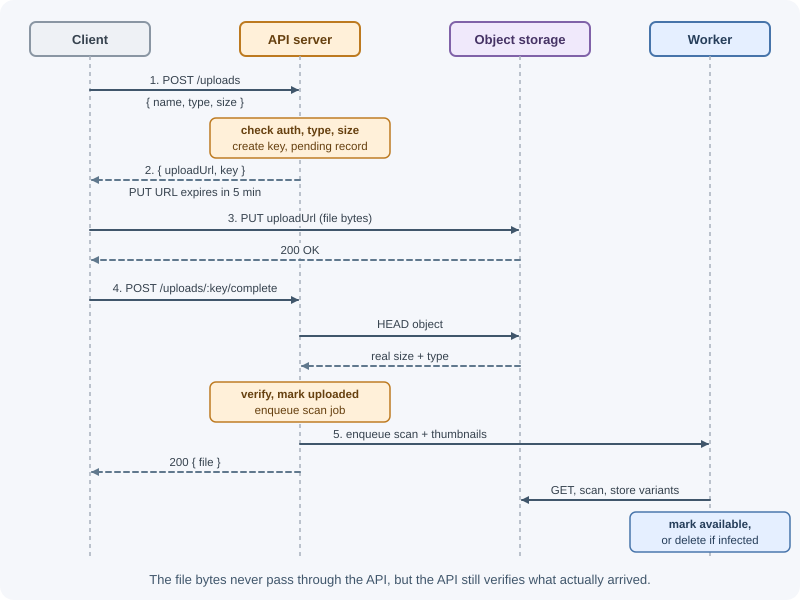
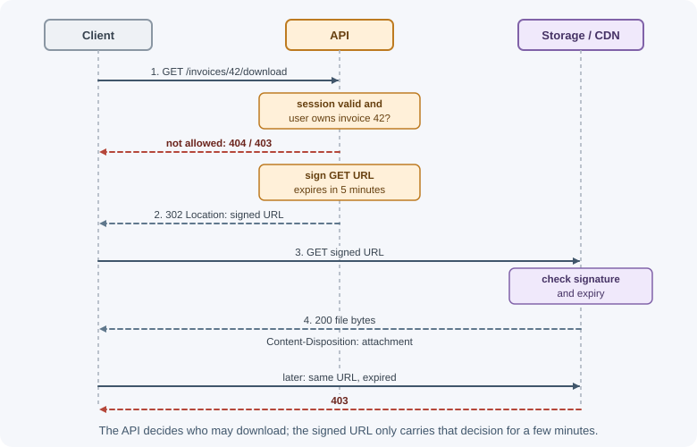

File Storage and Uploads¶
Many applications accept files — profile photos, documents, invoices, videos, CSV imports — and serve them back later. Doing this well involves choosing where files live, how they get there, how to validate them, who may download them, and how they are processed and eventually deleted. This page covers the backend design; the Express mechanics of receiving uploads are in file uploads with Multer.
Why it matters¶
Files are large, binary, and untrusted. Handled carelessly, they cause real problems:
- A server's disk fills up, or files vanish when a container is replaced.
- Uploads through the API exhaust memory and block other requests.
- A "profile photo" is actually an HTML file with JavaScript, served from your domain (stored XSS), or malware passed on to other users.
- Private documents are accessible to anyone who guesses the URL.
- Old files accumulate forever, costing money and creating privacy risk.
A deliberate storage design solves these and scales from a hobby project to millions of files.
Real-world usage¶
- Amazon S3 presigned URLs use the creator's credentials to grant time-limited permission to download or upload a specific object; with the AWS CLI the longest expiry is 7 days (Amazon S3: presigned URLs). New S3 buckets, access points, and objects do not allow public access by default, and S3 Block Public Access settings override policies that try to open them (Amazon S3: Block Public Access).
- Google Cloud Storage signed URLs give anyone holding the URL time-limited read, write, or delete access to one resource, with a maximum expiry of 604,800 seconds (7 days) (Google Cloud: signed URLs).
- Resumable uploads at Cloudflare Stream. Videos over 200 MB must be uploaded with the tus protocol, and Cloudflare recommends tus for smaller files too on unreliable connections, because an interrupted upload can resume (Cloudflare Stream: resumable uploads).
Popular tools and providers: Amazon S3, Google Cloud Storage, Azure Blob Storage, Cloudflare R2, and MinIO (self-hosted, S3-compatible); Multer and Busboy for receiving uploads in Node.js; tus clients and servers for resumable uploads; ClamAV for malware scanning.
How it works¶
Storage options¶
| Option | How it works | Pros | Cons |
|---|---|---|---|
| Local disk | Write files to the server's filesystem | Simple; fast for one server | Lost when containers are replaced; not shared across instances; manual backups; disk fills up |
| Database (BLOB / GridFS) | Store bytes in the database (MongoDB GridFS splits files into chunks) | Transactions and backups together with data | Bloats the database; expensive storage; database becomes a file server |
| Object storage (S3 and compatibles) | Store objects in buckets via an HTTP API | Practically unlimited, durable, cheap; scales independently; signed URLs; lifecycle rules; CDN integration | Network latency; some bucket configuration changes are eventually consistent (S3 object reads after writes are strongly consistent); new concepts to learn |
| Network file system (EFS, NFS) | Shared filesystem mounted on several servers | Works with code expecting files | Costlier; performance and locking subtleties |
Object storage — Amazon S3, Google Cloud Storage, Azure Blob Storage, or S3-compatible services like Cloudflare R2 and MinIO — is the standard choice for production applications. Your database stores metadata (owner, name, size, type, storage key); the object store holds the bytes.
GridFS can be reasonable when files are modest in size and you want them in the same backup as your MongoDB data — see GridFS.
Object storage concepts¶
- Bucket: a container for objects, with its own access policy and region.
- Object key: the object's name within the bucket, such as
users/42/avatars/7f3a9c.webp. The "folders" are just key prefixes. - Metadata: content type, cache headers, custom key-value metadata.
- Access control: buckets should be private by default; access is granted through IAM policies or temporary signed URLs. Accidentally public buckets are a common cause of data leaks.
- Storage classes and lifecycle rules: move old objects to cheaper tiers or delete them automatically after a period.
Upload pattern 1: through your server¶
The client sends the file to your API as multipart/form-data; the server
validates it and forwards it to storage.
Client ──(multipart upload)──► API server ──(stream)──► Object storage
│
└─► save metadata in database
- Full control: validation, scanning, processing before storing.
- Uses your bandwidth and server resources; long uploads hold connections.
- Stream the file to storage instead of buffering it entirely in memory — a few concurrent 500 MB uploads held in memory can crash the process.
- Enforce size limits while streaming, not after.
Good for small files (avatars, documents up to a few MB) and when you must inspect content before accepting it.
Upload pattern 2: direct to storage with presigned URLs¶
The server authorizes the upload and gives the client a short-lived signed URL; the client uploads directly to object storage.

- Your servers never handle the bytes — great for large files and high volume.
- The signed URL limits what can be uploaded: one specific key, an expiry time, and (with presigned POST policies) content type and size ranges.
- You must verify after upload, because the client controlled the bytes: check the object's actual size and type, scan it, then mark it usable.
- Storage event notifications (for example, S3 events to a queue) can trigger processing instead of relying on the client to call "complete."
- The bucket needs CORS configured to allow browser uploads from your origin.
Large files: multipart and resumable uploads¶
For files of hundreds of megabytes or more:
- Multipart upload (S3 and others) splits a file into parts uploaded separately (in parallel), then combined. Failed parts are retried individually instead of restarting the whole upload. Each part can have its own presigned URL.
- Resumable upload protocols such as tus let clients resume after a network drop from the last confirmed byte.
- Clean up incomplete multipart uploads with a lifecycle rule; abandoned parts still cost money.
Validation¶
Never trust the file name, extension, or the Content-Type sent by the
client — all are client-controlled.
- Size: enforce a maximum per file and per request; reject early
(
413 Content Too Large). - Count: maximum number of files per request.
- Type by content: inspect the magic bytes (file signature) at the
start of the file. PNG starts with
89 50 4E 47, PDF with%PDF, JPEG withFF D8 FF. Libraries such asfile-typedetect this. - Allowlist types your feature actually needs (for example, JPEG, PNG, WebP for avatars), rather than blocking dangerous ones.
- Content checks: re-encode images (which strips embedded payloads and metadata like GPS location), and limit image dimensions to defend against decompression bombs.
- Archives: be careful extracting ZIP files — check total extracted size
("zip bombs") and reject entries with
../paths ("zip slip").
Malware scanning¶
If users share files with other users, scan uploads before making them
available — for example, with ClamAV or a cloud malware-scanning service.
A common flow: upload to a quarantine location or mark the record
pending, scan asynchronously in a background job, then move the file to the
clean location and mark it available, or delete it and notify the user.
Key naming¶
- Generate keys on the server; never use the user's file name as the key (path traversal, collisions, overwrite, odd characters).
- Use random or unique IDs:
uploads/{userId}/{uuid}.pdf. - Keep the original file name only as metadata for display and the
Content-Dispositiondownload name (sanitized). - Prefix by tenant or owner to simplify access policies and deletion.
Private and public files¶
- Public files (product images, public avatars) can be served from a public bucket path or, better, through a CDN.
- Private files (invoices, medical documents, exports) stay in a private bucket. To serve them:
- Signed download URLs: after an authorization check, the API returns a
short-lived presigned
GETURL (for example, valid for 5 minutes). - Proxy through the API: the API checks permissions and streams the file. More control, more server load.
- Set
Content-Disposition: attachmentfor user-uploaded files that should download rather than render, and set an accurateContent-TypewithX-Content-Type-Options: nosniff. Ideally serve user content from a separate domain so a malicious file cannot run scripts on your main site's origin.

Serving through a CDN¶
A CDN caches files at edge locations close to users, reducing latency and storage egress costs. For public assets, use long cache lifetimes with versioned keys (a new key for a new version). For private files, CDNs support signed URLs or signed cookies. See CDN.
Processing pipelines¶
Image resizing, thumbnail generation, PDF previews, video transcoding, and text extraction are slow — do them in background jobs, not in the upload request (see background jobs and scheduling):
upload complete ─► queue "process-image" ─► worker: scan, resize to
3 sizes, convert to WebP,
strip metadata ─► store
variants ─► mark record ready
Video often uses dedicated managed services because transcoding is CPU- and time-intensive.
Metadata in the database¶
A typical record:
{
"_id": "file_7f3a9c",
"ownerId": "user_42",
"storageKey": "uploads/user_42/7f3a9c.pdf",
"originalName": "Invoice March.pdf",
"contentType": "application/pdf",
"size": 248113,
"checksum": "sha256:9b74c9897bac770ffc029102a200c5de...",
"status": "available",
"createdAt": "2026-11-07T14:32:10Z"
}
Authorization checks use this record (is the requester the owner?), and listings never have to touch object storage.
Lifecycle and deletion¶
- When a record is deleted, delete the object too — or mark it and let a cleanup job remove orphans. Keep the two in sync.
- Use lifecycle rules to expire temporary uploads, abandoned multipart parts, and old exports.
- Consider versioning on buckets holding important data, to recover from accidental overwrites or deletes.
- Respect data-retention and privacy obligations: when a user deletes their account, their files must go too (including variants, thumbnails, and backups within your policy).
When to use and when not to use¶
Use object storage with presigned URLs when:
- Files are larger than a few megabytes, or there are many of them.
- You run more than one app instance, or containers that are replaced.
- Files are private and must be served only after an authorization check.
Upload through your server (streaming) when:
- Files are small and you must inspect or transform them before they are stored.
- Clients cannot reach the storage service directly.
Avoid:
- The container's local disk for anything that must survive a redeploy.
- Storing large files in the main database "to keep things simple" — it bloats backups and makes the database a file server.
| Situation | Approach |
|---|---|
| Avatars and small documents | Through the server (streamed), or presigned upload |
| Videos and large archives | Direct-to-storage multipart or resumable (tus) upload |
| Private invoices and medical files | Private bucket + short-lived signed download URL |
| Public product images | Public path behind a CDN with versioned keys |
| Files that must share a MongoDB backup | GridFS, for modest sizes |
| Temporary exports | Object storage with a lifecycle rule to delete them |
Practical examples¶
Creating a presigned upload URL (AWS SDK v3)¶
import { S3Client, PutObjectCommand } from "@aws-sdk/client-s3";
import { getSignedUrl } from "@aws-sdk/s3-request-presigner";
import { randomUUID } from "node:crypto";
const s3 = new S3Client({
region: process.env.AWS_REGION,
// Recent SDK versions otherwise add a checksum of the (empty) request body
// to presigned upload URLs, and the real upload then fails to match it
requestChecksumCalculation: "WHEN_REQUIRED",
});
const ALLOWED_TYPES = new Map([
["image/jpeg", "jpg"],
["image/png", "png"],
["application/pdf", "pdf"],
]);
const MAX_SIZE = 10 * 1024 * 1024; // 10 MB
app.post("/api/uploads", authenticate, async (request, response) => {
const { contentType, size, fileName } = request.body;
const extension = ALLOWED_TYPES.get(contentType);
if (!extension || !Number.isInteger(size) || size <= 0 || size > MAX_SIZE) {
return response.status(400).json({ error: "Unsupported file type or size" });
}
const key = `uploads/${request.user.id}/${randomUUID()}.${extension}`;
await db.files.insertOne({
ownerId: request.user.id,
storageKey: key,
originalName: String(fileName ?? "file").slice(0, 200),
contentType,
size,
status: "pending",
createdAt: new Date(),
});
const uploadUrl = await getSignedUrl(
s3,
new PutObjectCommand({
Bucket: process.env.UPLOADS_BUCKET,
Key: key,
ContentType: contentType,
}),
{
expiresIn: 300, // seconds
// Sign Content-Type so the client must upload with exactly this type
// (by default only the host header is signed)
signableHeaders: new Set(["content-type"]),
}
);
response.status(201).json({ key, uploadUrl });
});
After the client uploads, a "complete" endpoint (or a storage event) should
check the object with a HeadObjectCommand, compare its size, inspect its
magic bytes, enqueue scanning, and only then mark it available.
Short-lived download URL after an ownership check¶
import { GetObjectCommand } from "@aws-sdk/client-s3";
app.get("/api/files/:id/download", authenticate, async (request, response) => {
const file = await db.files.findOne({
_id: request.params.id,
ownerId: request.user.id,
status: "available",
});
if (!file) {
return response.status(404).json({ error: "File not found" });
}
// filename* carries a UTF-8, percent-encoded name (RFC 6266 / RFC 8187).
// encodeURIComponent leaves ' ( ) * unescaped, which that syntax forbids.
const encodedName = encodeURIComponent(file.originalName).replace(
/['()*]/g,
(char) => `%${char.charCodeAt(0).toString(16).toUpperCase()}`
);
const url = await getSignedUrl(
s3,
new GetObjectCommand({
Bucket: process.env.UPLOADS_BUCKET,
Key: file.storageKey,
// Download with the original name instead of rendering in the browser
ResponseContentDisposition: `attachment; filename*=UTF-8''${encodedName}`,
}),
{ expiresIn: 300 }
);
response.json({ url });
});
Best practices¶
- Store bytes in object storage and metadata in the database.
- Keep buckets private; grant access with short-lived signed URLs after authorization checks.
- Prefer direct-to-storage uploads for large files; stream when proxying.
- Enforce size and count limits early; validate type by magic bytes against an allowlist.
- Generate storage keys on the server; keep original names only as metadata.
- Scan files that will be shared; quarantine until clean.
- Process files asynchronously in background jobs.
- Serve user-uploaded content with safe headers, ideally from a separate domain; use a CDN for public assets.
- Use lifecycle rules for temporary data and incomplete uploads; delete objects when records are deleted.
In production¶
- Browser uploads fail with a CORS error. Symptom: the presigned
PUTworks fromcurlbut fails in the browser. Detect: the browser console shows a CORS error on the storage domain's preflight. Cause: the bucket has no CORS rule allowing your origin and thePUTmethod. Fix: add a bucket CORS rule for your app's origin, the methods used, and the headers the client sends (such asContent-Type). - Presigned uploads are rejected after an SDK upgrade. Symptom: uploads
that worked before now fail with a checksum mismatch. Detect: the upload
URL contains
x-amz-checksum-crc32andx-amz-sdk-checksum-algorithmquery parameters. Cause: recent AWS SDK versions calculate request checksums by default (WHEN_SUPPORTED), and for a presigned URL that is the checksum of an empty body. Fix: create the S3 client withrequestChecksumCalculation: "WHEN_REQUIRED"(AWS SDKs: data integrity protections). - Users can upload any file type through a presigned URL. Symptom: HTML
or executable files appear in a bucket meant for images. Detect: stored
objects whose
Content-Typeor magic bytes do not match the allowlist. Cause: only thehostheader was signed, so the client chose its ownContent-Type; nothing checked the bytes afterwards. Fix: signcontent-type(signableHeaders), and verify the object (size, magic bytes) before marking it available. - Storage costs keep rising. Symptom: the bucket grows every month even though users delete files. Detect: the object count is far larger than the number of file records; incomplete multipart uploads appear in storage reports. Cause: orphaned objects and abandoned uploads. Fix: delete objects with their records, run an orphan-cleanup job, and add lifecycle rules for temporary prefixes and incomplete multipart uploads.
- Download links leak. Symptom: a private file is reachable from a link posted elsewhere. Detect: access logs show downloads long after the link was issued. Cause: signed URLs with long expiries, or files in a public path. Fix: keep expiries to minutes, issue URLs only after an ownership check, and keep private files in private buckets.
Important terminology¶
- Object storage: a service storing files as objects in buckets via an HTTP API.
- Bucket: a top-level container in object storage.
- Object key: the unique name of an object within a bucket.
- Presigned URL: a temporary URL that grants permission for one specific operation on one object.
- Multipart upload: uploading a large file in independently retried parts.
- Resumable upload: an upload that can continue after interruption.
- Magic bytes: the signature at the start of a file identifying its format.
multipart/form-data: the request encoding browsers use for file uploads.Content-Disposition: a header controlling whether a response is shown inline or downloaded, and its file name.- Lifecycle rule: an automatic policy to transition or delete objects.
- Quarantine: holding an upload separately until it is scanned.
- CDN: a content delivery network caching content near users.
Common mistakes and misconceptions¶
- Storing uploads on a container's local disk, then losing them on redeploy.
- Buffering whole uploads in memory.
- Trusting the extension or
Content-Typesent by the client. - Using the user's file name as the storage path.
- Public buckets for private documents, or long-lived signed URLs.
- Skipping post-upload verification for presigned uploads.
- Serving user uploads from the main domain with a renderable type, enabling stored XSS.
- Never deleting anything, leaving orphaned and outdated files.
Revision questions¶
- Why is object storage preferred over local disk for production uploads?
- Walk through the presigned URL upload flow. What must the server verify after the client uploads?
- Why should file type be checked using magic bytes rather than the
extension or
Content-Type? - How would you let a user download a private invoice securely?
- Why should image processing and malware scanning happen in background jobs?
- What lifecycle rules would you set for an uploads bucket?